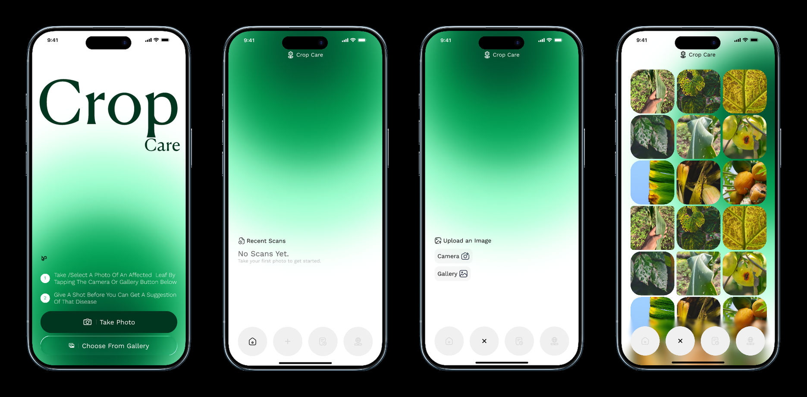
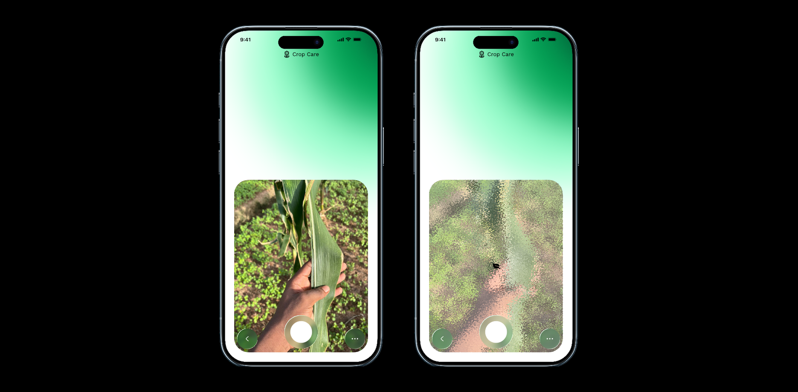
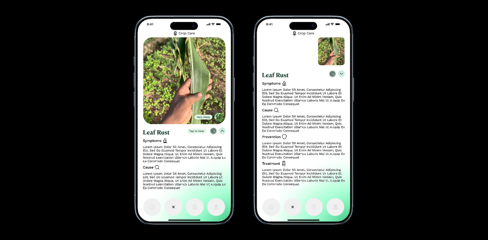
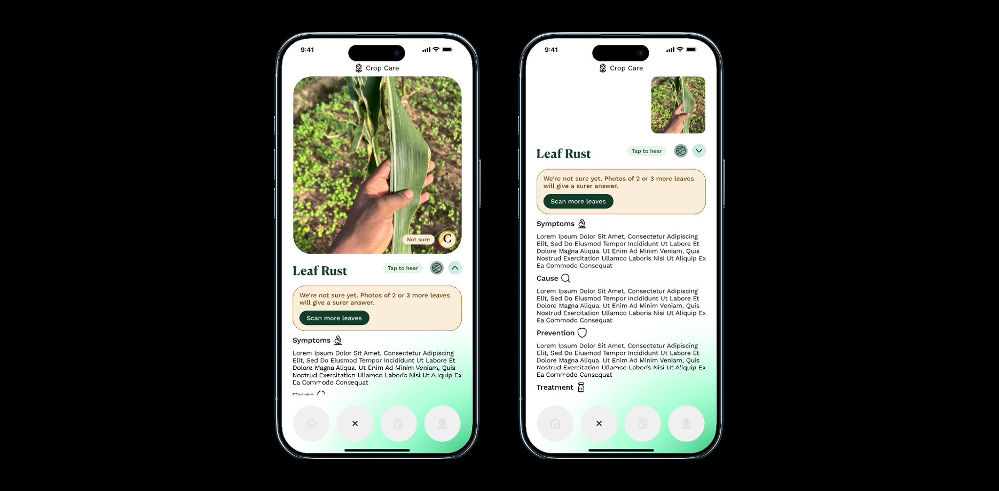
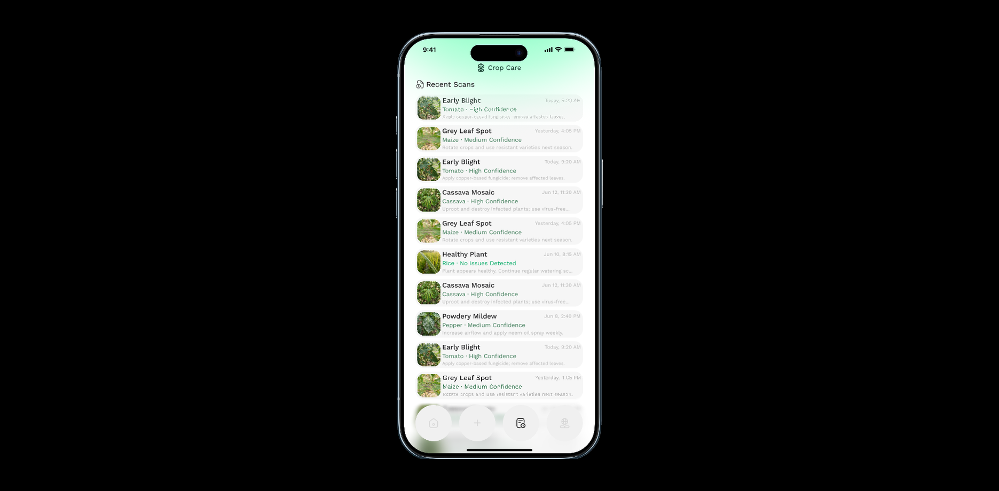

Crop Care case study
1. Introduction
Crop Care is a plant-disease app that helps growers name what's wrong, act on it, and remember what happened.
A leaf turns brown. A plant wilts for no clear reason. For a farmer, that could mean a lost season. For someone growing tomatoes at home, it's a small heartbreak. Either way, the question is the same: what is this, and what do I do?
Crop Care answers that from a single photo. Point the camera at a sick leaf, and the app names the likely disease, explains it in plain language, and suggests what to do next. Every scan is saved, so over time the app becomes a record of what went wrong and what worked.
The idea wasn't mine. It began as a school project led by students in another department, and I joined as the designer. They brought the concept. I took it from early conversations with farmers in Accra through to a working prototype.
This case study covers why the problem matters, how the app works, the decisions behind it, and the hardest question it raises: how should an app behave when it might be wrong?
2. The problem
When a crop gets sick, most growers in Ghana have no quick way to find out what it is, and no record of what worked last time.
Context
From village farms to open plots in the middle of Accra, most of Ghana's farming is done by smallholders. They make up about 80% of the sector. Globally, pests and diseases take somewhere between a fifth and a third of major staple crops.
Help is thin. Estimates put Ghana at one extension officer for every 700 to 1,500 farmers. Rural literacy sits around 55%, against 81% in towns and cities. And in one survey of 1,565 farmers in Northern Ghana, only about 1 in 6 owned a smartphone.
So Crop Care had to work for the farmer and for the son, niece or field agent who scans the leaf on their behalf.
What I heard
I spoke informally with four or five farmers growing maize, cabbage and lettuce on open plots near Korle Bu, in central Accra. These were casual chats, not structured interviews. I came away with impressions, not findings, and five people can't speak for every grower in Ghana.
Still, a pattern stood out. None of them kept a record of crop problems. What they knew lived in memory, learned from fathers and uncles. Research on African farming describes the same thing: pest knowledge is built from experience and passed down by word of mouth.
Even in the capital, with a hospital next door and phones in every pocket, crop knowledge still travelled the old way. That knowledge is valuable. But memory fades, and it doesn't travel.
Two problems, not one
- Right now: what is wrong with my plant, and what do I do?
- Over time: has this happened before, and what worked last time?
Most plant apps answer the first question. Crop Care is designed for both.
Who it's for
A farmer near Korle Bu notices brown spots spreading across her cabbage. Across town, someone growing tomatoes in a backyard bed sees the leaves curling. One has income at stake. The other has care and pride. Neither has the words for what they're looking at.
They sit at two ends of one spectrum, and they share one need: help me understand what's wrong, and help me remember it. Research on low-literacy design found text-heavy interfaces were unusable for first-time low-literacy users, and error-prone even for literate newcomers. Designing for the farmer makes the app easier for everyone.
There's often a quiet third person too: the helper who holds the phone. The flow stays the same for all of them. Scan, understand, act, remember.
The business side
The team behind the idea wanted a tool farmers would actually trust and keep using. As a school project, there was no budget, no engineers and no live AI model. The job was to prove the idea worked as an experience before anyone built it.
The tension I watched for was money versus trust. A free diagnosis app can make money by pushing products, and the easiest product to push is a chemical. If every result ends in "buy this spray", farmers learn the app is selling, not helping. So treatment advice in Crop Care leads with what the grower can do, and stays honest about uncertainty, even when a confident answer would look more impressive.
The more sustainable path is partnership. Ghana's Ministry of Food and Agriculture already backs digital extension in its e-extension strategy for 2022 to 2030. A tool that helps thin extension services reach more farmers fits that direction better than a tool built around sales.
3. The app
Crop Care does four things: scan, understand, act, remember. Each has its own moment in the app.
Getting started
The app opens with two numbered steps: photograph a sick leaf, get a suggestion. That's the whole tutorial. From home, one tap opens the camera or the gallery, with recent scans waiting underneath.

Scan
The camera fills the screen. While the app works, the leaf shimmers and a rabbit, a turtle and a leaf take turns as the loading icon. A quiet joke about speed and patience, and a nicer thing to watch than a spinner.

Understand and act
The result leads with the disease name in large serif type, set against the photo. Below sit four plain sections: Symptoms, Cause, Prevention and Treatment. As you scroll, the photo shrinks to a thumbnail, so the answer takes over without losing sight of the leaf.

In the corner of the photo, a small coin flips on its own to reveal how sure the app is: "96%, Very likely". On an otherwise still screen, the movement draws the eye to confidence before you act. Then it rests on the score.
Beside the disease name sits the voice button. Tap it and the app reads the result aloud, and you can ask it questions back. For a farmer who finds the text hard going, or a helper reading on someone's behalf, the result becomes a conversation rather than a page.
When the app isn't sure
If confidence is low, the coin turns amber and reads "Not sure". A card at the top says so plainly and asks for photos of two or three more leaves. The app would rather ask for more than guess.

Remember
Every scan saves to History: crop, disease, confidence, date and a one-line recommendation. Each entry is small. Together they become the crop-health record none of the farmers I spoke to kept. Next season, "has this happened before?" finally has an answer.

4. Design process
Every major decision traces back to something I heard from farmers or read in published research.
Listening, then reading
The farmer conversations shaped the brief. Nobody kept a record of crop problems, so remembering became half the app. I then turned to published research on smallholder farming, low-literacy design and how people trust AI. It told me who the app had to work for, and where it could go wrong.
An assumption I had to drop
I expected to design for rural farmers. The people I actually met were urban growers in central Accra. That pushed me towards one app for a spectrum of growers, rather than a tool only for remote villages.
What I considered, and what I chose
Words only for confidence, or words plus a number. "Likely" feels friendlier for low-literacy users. But research shows people read words like "likely" very differently, and that pairing a number with a word works better. I chose both: "96%, Very likely".
One confident answer, or an honest "not sure". A single confident diagnosis looks more impressive. But plant AI is far less accurate in real fields than in the lab. I designed a low-confidence state that asks for more leaves instead of guessing.
A coin that flips forever, or one that settles. My first version flipped non-stop to keep catching the eye. But constant motion stops being noticed, hides the score half the time, and breaks accessibility guidance on moving content. Now it flips when the result appears, then rests on the score.
A logbook you fill in, or one that fills itself. Research on farm records shows people skip them when they feel like extra work. So every scan saves to History automatically. The record is a by-product, not a chore.
Text, or voice too. Text alone leaves out the people who need the app most. The voice button reads the result aloud and takes questions back.
The trade-off I kept
Hiding the score on the back of the coin keeps the result screen calm, with the disease name and photo leading. The cost is that a still coin is easy to miss. The flip is how I pay that cost: motion pulls the eye to confidence at the moment someone decides what to do.
5. Challenges
The hardest part of Crop Care isn't recognising a disease. It's what the app should do when it might be wrong.
The constraints I worked within
- Two months, one designer, Figma only. No engineers, so every idea had to be shown as an experience, not built.
- No real AI model. I couldn't test accuracy. I had to design for an AI whose mistakes I could only predict from research.
- Shared phones. Many farmers don't own a smartphone, so the person scanning may not be the person whose crop it is.
- Mixed literacy. Every important message had to work without careful reading.
- The idea belonged to someone else. My job was to make their concept work for growers, not replace it with mine.
Why the AI will be wrong
In one well-known study, a plant disease model scored 99% on clean lab photos. On photos taken in other conditions, it dropped to 31%. Real leaves are dusty, shadowed and photographed in a hurry. Crop Care's AI would face exactly those photos.
There's a second risk. When people see an AI make a mistake, they lose faith in it faster than they would in a person. One confident wrong answer could lose a farmer for good. And research shows that showing a confidence score helps people judge when to trust the AI, but doesn't automatically make their decisions better. So simply adding a number wasn't enough.
How the design responds
- Confidence at the decision moment. The coin flips as soon as the result appears, so how sure the app is arrives before anyone acts, not later in History.
- Word, number and colour together. "96%, Very likely" in green, or "Not sure" in amber. Each format covers a weakness of the others.
- Ask for more instead of guessing. In a field study of one plant app, accuracy rose from 65% to as high as 88% when six leaves per plant were assessed. So when confidence is low, Crop Care asks for two or three more leaves.
- Memory as a check. Over time, History shows whether past suggestions and treatments actually worked. The record helps people judge the app, not just remember their crops.
What I haven't solved
I found no published study of how farmers read AI confidence scores. My design rests on research from other fields, so it needs testing with real growers. If a result stays unclear after more photos, the app should also point people to a human: an extension officer or a plant clinic. That route isn't designed yet.
6. What's next
Crop Care is a prototype. It hasn't shipped and hasn't been tested with farmers, so there are no results to report yet. I'd rather say that than invent numbers.
What changed
The design itself moved a long way. It started as a scanner that announced a disease as fact. It ended as an app that shows how sure it is at the moment of decision, says "not sure" when it should, can talk instead of only showing text, and remembers every scan without being asked.
How I would test it (not yet done)
The first test would be a small usability study with about five growers in Accra, mixing plot farmers and home growers. Unlike my early chats, these would be planned sessions with set tasks. I'd watch for:
- Noticing confidence. Do people see the coin before acting, and can they say what it meant?
- Acting on "not sure". When confidence is low, do people take more photos, or ignore the prompt?
- Using voice. Do people who struggle with the text tap the voice button without being shown?
- Returning to History. Weeks later, do people look back at past scans when a problem returns?
The next version
- Crop profiles. One page per crop showing its scan history over time, so patterns become visible.
- Local languages. The voice conversation in Twi, Ga and other Ghanaian languages, not just English.
- A route to a human. When the app stays unsure, a clear path to an extension officer or plant clinic.
- Testing with real growers. Everything above depends on it.
Get involved
We're now working to build Crop Care for real. If you'd like to support it, whether through funding, a partnership, or helping us test with growers, we'd love to hear from you.
References
- Abate, T., van Huis, A. & Ampofo, J.K.O. (2000). Pest management strategies in traditional agriculture: an African perspective. Annual Review of Entomology, 45.
- Abdulai, A.-R. et al. (2023). Is agricultural digitization a reality among smallholder farmers in Africa? Agriculture & Food Security.
- Dhami, M.K. & Mandel, D.R. (2022). Communicating uncertainty using words and numbers. Trends in Cognitive Sciences.
- Dietvorst, B.J., Simmons, J.P. & Massey, C. (2015). Algorithm aversion. Journal of Experimental Psychology: General, 144(1).
- Ghana Statistical Service (2021). 2021 Population and Housing Census, Literacy and Education.
- Medhi, I. et al. (2011). Designing mobile interfaces for novice and low-literacy users. ACM Transactions on Computer-Human Interaction, 18(1).
- Mohanty, S.P., Hughes, D.P. & Salathé, M. (2016). Using deep learning for image-based plant disease detection. Frontiers in Plant Science, 7.
- Mrisho, L.M. et al. (2020). Accuracy of a smartphone-based object detection model, PlantVillage Nuru. Frontiers in Plant Science, 11.
- Zhang, Y., Liao, Q.V. & Bellamy, R.K.E. (2020). Effect of confidence and explanation on accuracy and trust calibration in AI-assisted decision making. Proceedings of FAT* 2020.
Context figures on smallholder share, crop losses and extension officers come from the Ghana Investment Promotion Centre (2022), Savary et al. (2019) and the MoFA e-extension strategy (2022).